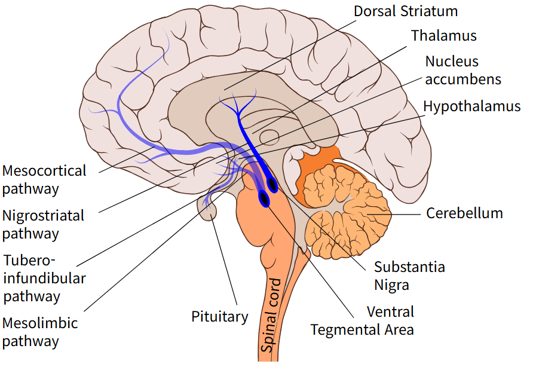

흑질선조체 도파민계 (Nigrostriatal dopamine system)

| # | 원문 | 한국어 |
|---|---|---|
| 1 | Dorsal Striatum | 배측 선조체(등쪽 선조체) |
| 2 | Thalamus | 시상 |
| 3 | Nucleus accumbens | 중격측좌핵(측좌핵) |
| 4 | Hypothalamus | 시상하부 |
| 5 | Cerebellum | 소뇌 |
| 6 | Substantia Nigra | 흑질 |
| 7 | Ventral Tegmental Area | 배쪽 피개 영역(VTA) |
| 8 | Pituitary | 뇌하수체 |
| 9 | Spinal cord | 척수 |
| 10 | Mesocortical pathway | 중뇌피질 경로 |
| 11 | Nigrostriatal pathway | 흑질선조체 경로 |
| 12 | Tuberoinfundibular pathway | 결절깔때기 경로 |
| 13 | Mesolimbic pathway | 중뇌변연 경로 |
쉽게 풀면
뇌 중간 부분의 흑질에서 선조체로 도파민이 흘러가는 길이다. 이 길의 신경세포가 서서히 사라지면 파킨슨병의 운동 증상이 나타난다.
왜 중요한가
파킨슨병 연구와 동물 모형 논문에서 자주 등장하는 개념이다. 논문에서 이 경로의 손상을 말할 때, 세포체 손실을 본 것인지 선조체 쪽 축삭 말단의 손실을 본 것인지 구분해 읽는다.
어디에 있고 어떻게 생겼나
흑질선조체 도파민계는 중뇌 흑질 치밀부(SNpc)에 있는 도파민 신경세포가 선조체로 투사하는 경로이다. 도파민 신경세포 집단 가운데 A9 집단이 가장 촘촘하게 모인 집단이며 대체로 흑질 치밀부와 일치한다. 건강한 성인 사람의 중뇌에서 이 부위는 신경멜라닌 색소가 쌓인 것으로 구별된다(Wikipedia contributors, n.d.).
- 구성: 이 신경세포는 매우 넓은 축삭 가지를 내고 에너지 요구가 높다(Santana-Román 등, 2026).
- 이웃 집단과의 구분: 복측 피개영역(VTA)의 이웃 도파민 신경세포는 상대적으로 더 잘 견디는 집단으로 비교된다(Santana-Román 등, 2026). 흑질의 등가쪽에는 소규모 A8 집단이 있다(Wikipedia contributors, n.d.).
맡은 기능
- 운동 조절: 흑질선조체 도파민계의 소실이 파킨슨병의 대표적 운동 증상의 바탕에 있다. 1950~60년대 연구에서 파킨슨병 환자에서 선조체 도파민이 모자라고, 흑질 치밀부 신경세포의 퇴행이 병리적 특징이며 운동 증상의 출현과 밀접하게 관련된다는 것이 확인되었다(Santana-Román 등, 2026).
- 선택적 취약성: 이 신경세포는 넓은 축삭 가지, 높은 에너지 수요, 지속적인 박동 활동, 세포질 도파민 대사 때문에 산화 스트레스와 미토콘드리아 기능 이상에 취약해서 퇴행하기 쉽다고 한다(Santana-Román 등, 2026).
- 경로 밖의 침범: 파킨슨병은 이제 흑질선조체 경로를 넘어 청반의 노르아드레날린 신경세포, 기저 전뇌의 콜린성 세포 등 여러 계를 침범하는 다계통 신경퇴행 질환으로 이해된다(Santana-Román 등, 2026).
연구에서 다루는 방식
단일세포 핵 RNA 분석 등으로 흑질 치밀부에 전사적으로 다른 도파민 하위 집단이 있고 일부가 파킨슨병에서 먼저 사라진다는 보고도 있다(Santana-Román 등, 2026).
논문에서는 이렇게 쓰입니다
예시 문장
아래 예문은 용어의 쓰임을 보이려고 만든 것으로, 실제 논문 문장이 아니다.
같은 흑질 안에서도 분자 표지에 따라 취약성이 갈린다는 뜻이다.
흑질선조체 신경세포의 전기적 특성을 요약한 문장이다.
병리가 시작되는 위치를 두고 가설이 맞선다는 뜻이다.
조금 더 깊게 보면
흑질선조체 도파민 신경세포는 내측전뇌다발을 지나 미상핵과 피각으로 투사한다. 흑질 치밀부의 부피는 약 0.056 cm³에 불과하지만 그 투사로 약 100배 큰 선조체를 조절하며, 설치류에서는 신경세포 하나가 최대 800 mm의 축삭과 약 100만 개의 시냅스를 만들어 선조체 신경세포의 최대 5%에 닿는다고 보고되었다.
사람 흑질 치밀부에서는 단일핵 RNA 분석으로 분자적으로 구분되는 도파민 신경세포 아형이 열 가지 확인되었고, SOX6와 AGTR1을 함께 발현하는 아형은 배쪽 흑질 치밀부에 많으며 파킨슨병에서 뚜렷이 줄어든다(Santana-Román 등, 2026).
주의할 점
흑질 치밀부, 복측 피개영역(A10), 후적핵 영역(A8)의 경계는 기능적으로 투과성이어서 이웃 영역의 도파민 신경세포도 선조체의 스트리오솜이나 매트릭스 구획에 투사하므로, 해부학적 이름만으로 투사 경로를 완전히 나눌 수는 없다. 파킨슨병의 선택적 취약성이 내재 요인(도파민 대사, 미토콘드리아 비효율)에서 오는지 외재 요인(α-시누클레인 전파, 신경염증 등)에서 오는지는 오래된 논쟁으로 남아 있다(Santana-Román 등, 2026).
참고 문헌
- Wikipedia contributors. (n.d.). Dopaminergic cell groups. Wikipedia.
- Santana-Román, E., Soto-Rojas, L. O., Manjarrez, E., & Arias-Carrión, O. (2026). Nigrostriatal dopaminergic vulnerability in Parkinson's disease: Neuroprotective strategies. Neural Regeneration Research, 21(8), 3378–3386.